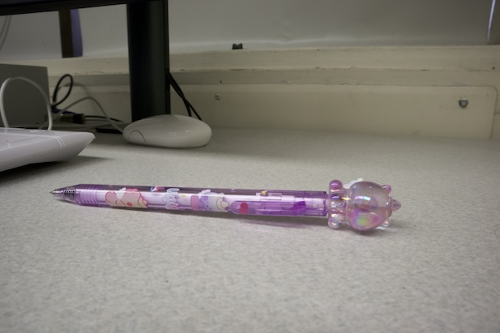
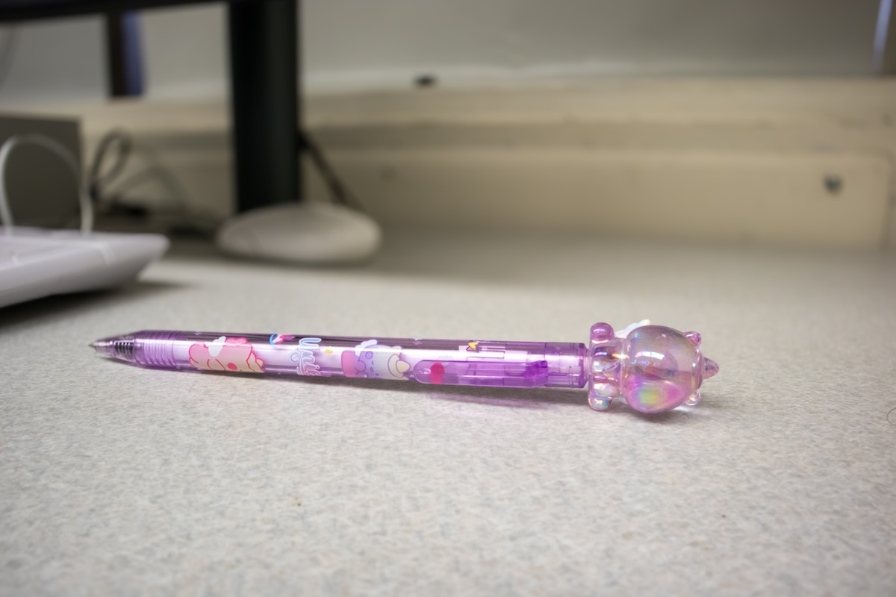

Shallow DoF

Deep DoF

For Homework 3, I posted 4 JPG images total on this single page: a shallow depth of field photo, a deep depth of field photo, a Photoshop blur version, and the original image used for the blur comparison. All images are under 2 MB and saved in the images folder.


Taking these photos for Homework 3 was a challenging yet a rewarding experience that taught me a lot about depth of field and creative control in photography, i respect people that take picture so much more now because getting the affect that i wanted was hard when taking the picture. When capturing the shallow and deep depth of field images, I had to carefully consider my aperture settings and the distance between the subject and background. For the shallow depth of field shot, I used a wide aperture to isolate the subject and create a blurred background, which really emphasized the focal point and added a professional feel.With the deep depth of field photo, it required a smaller aperture which was hard to do after i already learned how to do the shallow picture because the settings were already set one wat it was hard to set it to another. Editing the images added another layer of complexity, editing is hard because its new to me and i dont know where everything is, the videos did make it easier but i wish i just knew where everything was so i didnt feel lost, but its a learning experience. I experimented with Photoshop’s blur and adjustment tools to enhance depth perception and emotional tone. Overall, this assignment deepened my understanding of both technical and artistic aspects of photography.It also made me more aware of storytelling through visual choices like how they do in movies, from framing and focus to editing and tonal adjustments. This experience strengthened my skills and gave me confidence in experimenting creatively while applying technical knowledge.
Back to HomeContact: @britany.palaguachi07@myhunter.cuny.edu